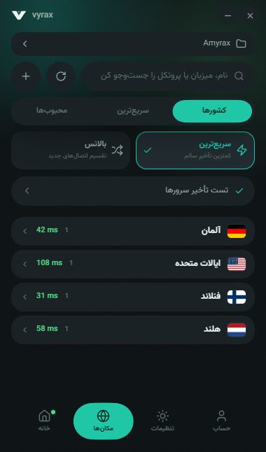
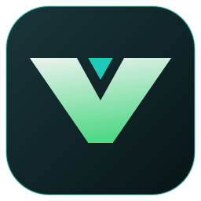
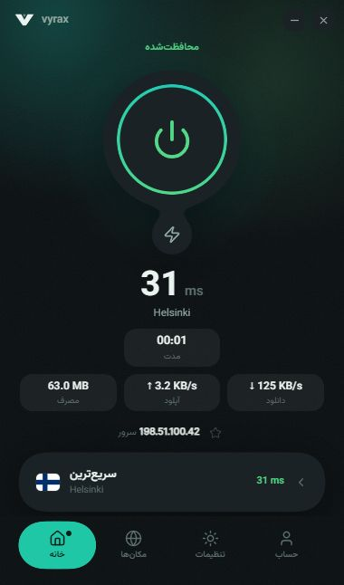
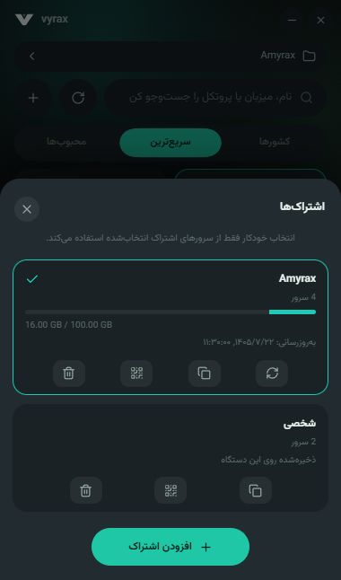
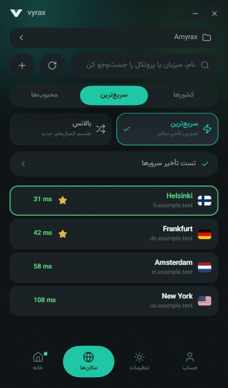
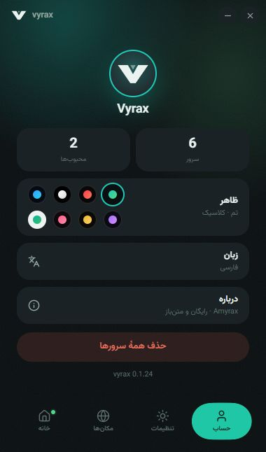
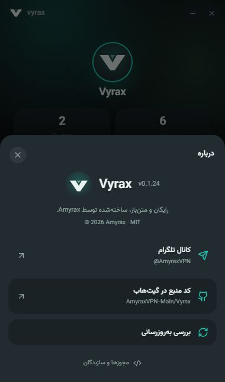

انتخاب مسیر، خودکار.
حالتهای خودکار و بالانس را امتحان کن، یا کنترل را به دست بگیر و یک سرور مشخص را انتخاب کن. انتخابها داخل اشتراک فعال تو میمانند.
AUTO · BALANCED · MANUAL

Vyrax.[ وایرکس · کلاینت VPN رایگان و متنباز ]
اشتراکهایت را یکجا داشته باش. مسیر مناسب را انتخاب کن و با یک لمس وصل شو. Vyrax، کلاینت VPN رایگان و متنباز برای موبایل و دسکتاپ.

MAKE IT YOURS
هشت تم، با حالوهوای خودت. ورق بزن و ظاهر واقعی هر تم را داخل اپ ببین.
اسکرینشاتها از رابط واقعی اپ گرفته شدهاند؛ اطلاعات سرورها و اتصال نمونهاند.
LESS FRICTION. MORE CONTROL.
از اولین لینک اشتراک تا انتخاب مسیر؛ ابزارهایی که هر روز به کارت میآیند.
حالتهای خودکار و بالانس را امتحان کن، یا کنترل را به دست بگیر و یک سرور مشخص را انتخاب کن. انتخابها داخل اشتراک فعال تو میمانند.
AUTO · BALANCED · MANUAL
لینک ساب یا چند کانفیگ را وارد کن؛ همه در یک گروه قرار میگیرند. بین گروهها جابهجا شو و لینکها را کپی یا با QR به اشتراک بگذار.

زمان پاسخ از داخل کانفیگ اندازهگیری میشود تا مسیرها را مقایسه کنی. کمترین تأخیر همیشه به معنی بیشترین سرعت دانلود نیست.

رابط فارسی و انگلیسی، تمهای مختلف و حرکتهای نرم. آشنایی همان صفحهٔ اتصال، از گوشی تا دسکتاپ.

کد Vyrax را ببین، تغییر بده و با حفظ نام و مجوز منتشر کن. خبرها و نسخههای جدید را هم در کانال Amyrax دنبال کن.
دیدن کد در GitHub ↗
READY IN A FEW STEPS
کانفیگ یا لینک اشتراک خودت را بیاور؛ Vyrax، ابزار اتصال توست.
فایل مناسب سیستمعامل و معماری دستگاه را دانلود و نصب کن.
از بخش افزودن، لینک اشتراک یا کانفیگها را یکجا وارد کن.
اجازهٔ VPN را تأیید کن؛ انتخاب خودکار یا سرور دلخواهت را فعال کن.
TAKE VYRAX WITH YOU
نسخهٔ پایدار 0.1.24 / رایگان و متنباز
GOOD TO KNOW
Vyrax یک کلاینت رایگان است. برای اتصال، به کانفیگ یا لینک اشتراک از سرویسدهندهٔ خودت نیاز داری. اپ همراه سرور یا اشتراک فروشی عرضه نمیشود.
بیشتر گوشیهای جدید arm64-v8a هستند. armeabi-v7a برای دستگاههای ۳۲ بیتی است. اگر نمیدانی، Universal را انتخاب کن؛ حجم بیشتری دارد و هر دو را پوشش میدهد. Android 10 یا جدیدتر لازم است.
نسخهٔ ویندوز گواهی ناشر تجاری ندارد و نسخهٔ مک هنوز notarized نیست؛ سیستمعامل ممکن است هشدار اعتماد نشان دهد. اندروید هم ممکن است نصب خارج از فروشگاه را هشدار دهد. فایل رسمی را فقط از ریلیز همین مخزن بگیر؛ جزئیات نصب هر سیستم در راهنما آمده است.
وقتی نسخهٔ پایدار جدیدی در GitHub منتشر شود، اپ یک اعلان کوچک و قابل بستن نشان میدهد. با زدن اعلان، صفحهٔ آخرین ریلیز باز میشود.
خبر نسخهها در تلگرام. ایدهها و گزارش مشکل در GitHub.